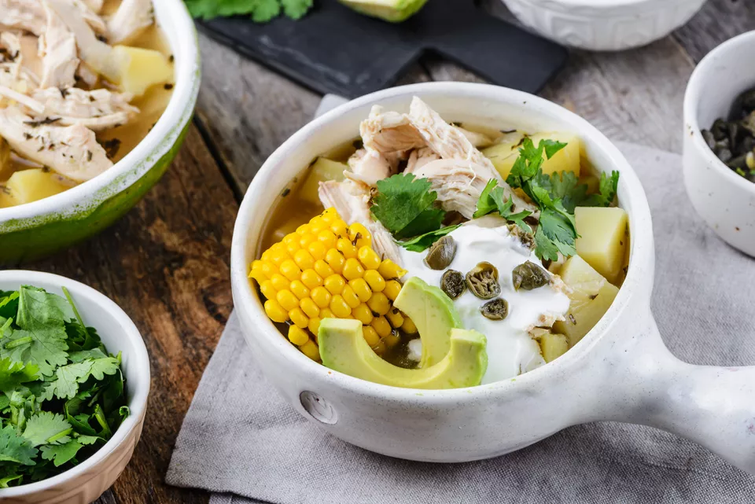

Ajiaco

Description
Ajiaco is a unique Colombian dish, especially beloved in the city of Bogota. It's a hearty chicken soup made with potatoes and corn on the cob. If you can find them, use small yellow Andean potatoes called papas criollas—they dissolve and thicken the soup as it cooks.
Ingredients
- 2 large bone-in, skin-on chicken breasts
- 1 large yellow onion, coarsely chopped
- 5 clove garlic, coarsely chopped
- 1 tablespoon kosher salt
- 1 tablespoon freshly ground black pepper
- 2 tablespoons olive oil
- 4 cups chicken stock
- 1 1/2 pounds mixed potatoes (such as red, Yukon Gold, and russets), peeled and cut into bite-size chunks
- 2 to 3 medium ears corn, quartered, or 1 1/2 cups frozen corn kernels
- 1 bunch fresh cilantro, tied with kitchen twine
- 1 bunch green onions, tied with kitchen twine
- 2 tablespoons dried guascas
Steps
- Gather the ingredients.
- Place the chicken in a glass or ceramic dish. Top with the onion, garlic, salt, and pepper.
- Cover and refrigerate for 8 to 24 hours.
- Heat the olive oil in a heavy 4-quart lidded pot over medium-high heat.
- Add the chicken with the vegetables and brown each side, about 6 minutes.
- Pour in the stock and raise the heat to high.
- When the mixture boils, lower the heat to medium-low then cover and simmer. Cook until the chicken is tender, about 30 minutes.
- Transfer the chicken to a platter, reserving the cooking liquid in the pot.
- When cool enough to handle, remove the skin from the chicken and discard. Cut or tear the chicken breasts into bite-size strips and discard the bones.
- Place the potatoes in the pot with the cooking liquid and turn the heat to medium. Cover and cook for about 5 minutes.
- Add the corn, cilantro, green onions, and the guascas. Simmer, covered, for 20 minutes, or until potatoes are tender, but not overcooked.
- Remove the cilantro and green onions and return the chicken to the pot. Simmer a few minutes more until the chicken is warmed through.
- Ladle the soup into individual bowls and place the toppings on the table to be passed around.
- Serve and enjoy!